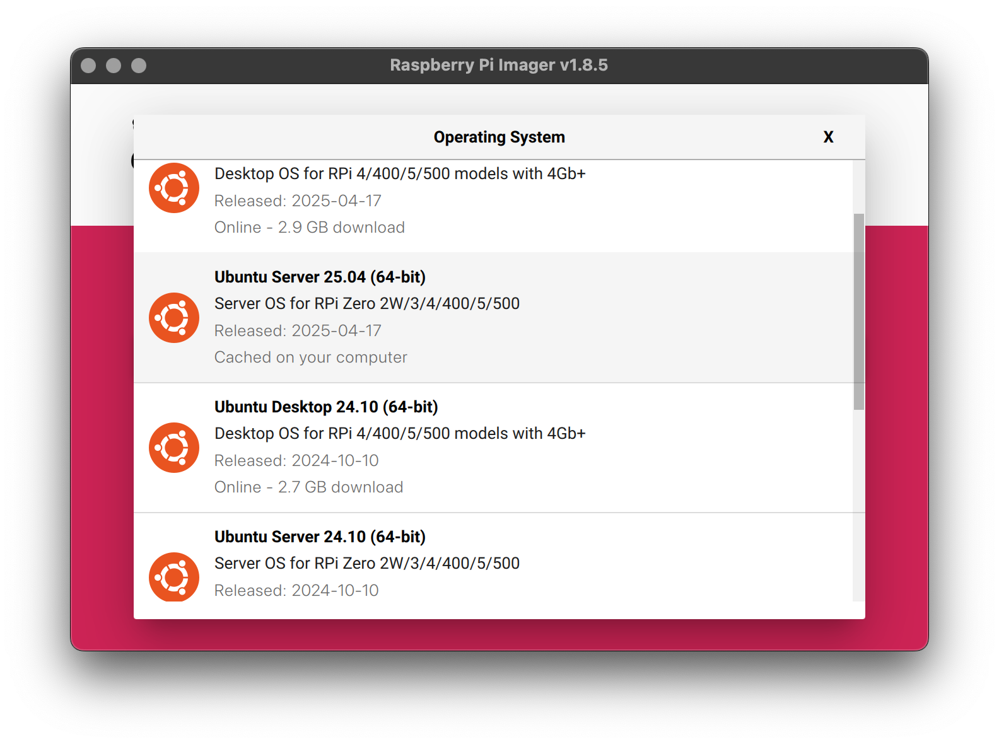

Baby's first Homelab: setting up a Pi with Pi-hole, Traefik, Tailscale and Registry
Alright, buckle up, I'll tell you about my excuse of a homelab setup which basically works as a gateway device but also runs some useful stuff. My requirements, per usual, are simple:
- Self-hosted services need to be accesible from everywhere.
- No stupid "this website is not protected" or whatever; TLS everywhere.
- With few configurations I must be able to add new services.
- Cannot cost me more than 10USD. Preferably, free.
Choosing the OS
I like systemd and package managers; that narrows down my choice of OS significantly. My day job is building custom Linux distributions, so not having to create one will be a nice change of scenary, so let's choose a binary distro too. I also don't want to compile software by hand (ie, I want to update everything from package feeds) so I need something like Docker, which excludes any *BSD[0].
Raspberry OS is a joke of course and nobody except the earliest of hobbists should use that. Debian is okay-ish, but a little too "DYI" for some of my tastes, I really want training wheels... Canonical seems to have everything somewhat under control these days. As in, Ubuntu is actually quite legit and they seem to really have made a nice server distro. Let's roll with that and see what happens.
I selected whatever the latest Ubuntu Server is, which was 24.04. It's not a critical server, so I don't care about running battle-tested LTS software on it. To flash it, I simply used the Raspberry Pi imager. Feels nice not having to reach for the terminal all the time.
I also recommend you to setup your ssh key and WiFi password in the imager itself, as it's a chore to do
it aftewards. Then you can pop that storage into the Pi and SSH directly into
ssh leon@raspberrypi.local, as the default Ubuntu image contains a software called Avahi,
which implements something called Multicast DNS (mDNS): basically, it's a little DNS server that
resolves hostnames into local IP addresses.
leon@raspberrypi ~> uname -a
Linux raspberrypi 6.14.0-1005-raspi #5-Ubuntu SMP PREEMPT_DYNAMICAn interjection, running Tailscale
For my first point- Self-hosted services need to be accesible from everywhere.
things would get somewhat complex too quickly. I'd need to run a VPN server, which is exposed online, and have my traffict be routed through it. Actually, I'd have to think about the architecture of my VPN - no thanks. Instead, I'll use Tailscale, a magic piece of software that implements Wireguard. But it's not just a Wireguard wrapper - it's a hell of a good Wireguard wrapper.
Tailscale lets you connect several clients into this network, and they manage the server for you. It's free for up to 100 devices and 3 users, so that's plenty for me. Tailscale has a killer feature for this deployment which is letting subnets be exposed through a client. I'll get into more detail about what that means, but the bottom point is that we have a managed connection from my Raspberry Pi to the outside world with a single line of code - the Tailscale installer.
I've also made my computer a client, so I can connect to my hosted services (and ssh) into the Pi from anywhere. So now I can do this from anywhere in the world:
λ ssh leon@raspberrypi.tailnopnopnop.ts.net
Welcome to Ubuntu 25.04 (GNU/Linux 6.14.0-1005-raspi aarch64)
...
leon@raspberrypi ~>Pi-hole, the poor man's DNS
I initially was going to rundnsmasq, because I'm fairly familiar with it, but then I learned
that Wireguard is to Tailscale as dnsmasq is to Pi-hole. There's an embedded dnsmasq instance in Pi-hole, so
I
can just use that and get DNS-based ad-blocking throughout my network (potentially everywhere, using
Tailscale to access the Pi-hole instance - get how powerful that software is?).
To deploy Pi-hole, I installed Docker using their convenience script, created
a local ./etc-Pi-hole directory and ran it once.
services:
Pi-hole:
image: docker.io/Pi-hole/Pi-hole:latest
container_name: Pi-hole
restart: unless-stopped
cap_add:
- NET_ADMIN
- SYS_TIME
- SYS_NICE
environment:
- TZ=Brazil/East
- FTLCONF_webserver_api_password={your_fun_password}
- FTLCONF_dns_listeningMode=all
volumes:
- ./etc-Pi-hole:/etc/Pi-hole
ports:
- "53:53/tcp"
- "53:53/udp"
- "67:67/udp"
- "80:80/tcp"
- "443:443/tcp"
I make this go up with docker compose up -d and go to
http://{Tailscale IP of the pi}/admin and use my password to login.
Digression: how does DNS-based blocking works?
I wanto to quickly mention how Pi-hole actually works, because I don't want to assume you know. DNS is
like a phonebook which has a name (like leonardoheld.ovh) and an address (an IP address).
Your computer says "Hi, I want to access github.com to the DNS server, and the DNS server
says "Sure, call 140.82.114.4". But 140.82.114.4 wants to make some money either tracking you or showing
you ads, so when you go to their website, it also forces you to call evil-advertiser.com
which shows you ads. Pi-hole runs a DNS server with a blocklist that contains
evil-advertiser.com, so when you unwillingly ask for it, it refuses to give you,
effectively blocking ads[1][2].
Reverse Proxying
As I told you, I want to have several services running in the same machine. This is a problem, because,
for example, these difference services will want to talk to the same port. So Pi-hole will try to have
its webserver running on 192.168.1.14:80 which will make my Registry deployment on the same
ip and port fail.
To solve this situation, you run a piece of software called a reverse-proxy. A proxy and a reverse proxy are the same thing, it's just a matter of perspective. From your perspective a proxy is a service that you bounce to before getting to your target. From the perspective of a visitor to your target, a reverse-proxy is a proxy that they hit.
Traefik is also a load-balancer: this is generally used when you need more than one server to balance
out the system load in serving the same requests, but it can also power a single server balancing
different requests. So even though we might have two services wanting 192.168.1.14:80, we
put a load balancer in front of these services that allows them to use that port depending on the
request for one or the other.
Here's how the deployment looks like now:
services:
Pi-hole:
image: docker.io/Pi-hole/Pi-hole:latest
container_name: Pi-hole
restart: unless-stopped
cap_add:
- NET_ADMIN
- SYS_TIME
- SYS_NICE
environment:
- TZ=Brazil/East
- FTLCONF_webserver_api_password={your_fun_password}
- FTLCONF_dns_listeningMode=all
volumes:
- ./etc-Pi-hole:/etc/Pi-hole
- ./etc-Pi-hole/dnsmasq.d:/etc/dnsmasq.d
ports:
- "53:53/tcp"
- "53:53/udp"
- "67:67/udp"
# - "80:80/tcp"
# - "443:443/tcp"
labels:
- "traefik.enable=true"
- "traefik.http.services.Pi-hole.loadbalancer.server.port=80"
traefik:
image: traefik:latest
container_name: traefik
restart: unless-stopped
ports:
- "80:80/tcp"
- "443:443/tcp"
volumes:
- './traefik:/etc/traefik:Z'
- '/var/run/docker.sock:/var/run/docker.sock'
command:
- "--log.level=DEBUG"
- "--providers.file.directory=/etc/traefik/dynamic"
- "--providers.file.watch=true"
- "--serverTransport.respondingTimeouts.readTimeout=360s"
- "--serverTransport.respondingTimeouts.writeTimeout=360s"
- "--serverTransport.respondingTimeouts.idleTimeout=360s"
Notice the following:
- We don't need to publish Pi-hole's ports 80 (HTTP) and 443 (HTTPS) anymore, because Traefik will load balance these ports for us. As in, I'll ask Traefik to give me Pi-hole on port 80 and it will do it for me, hence why Traefik instead has these ports exposed to the host. You'll see the importance of this when we add Registry in the mix.
- I've mounted the Docker socket inside Traefik and gave Pi-hole some Traefik-specific labels. Traefik will automatically pick those up from that socket mounted inside the container and generate some configuration for us, all automagically. You can also write configuration files specific to Traefik instead of using these.
Setting up DNS-01 Challenge
For the following requirement
- No stupid "this website is not protected" or whatever; TLS everywhere.
I don't really knew how to go forward besides buying a domain name. Apparently Caddy Server does some crazy shit that has HTTPS setup automatically, but I needed a domain anyway and had already chosen Traefik.
Now, this is a lot of heavy-lifting being done by Traefik, but it can do something called a DNS-01 Challenge against a Domain Name that you control and automatically issue a Let's Encrypt-backed certificate based on the result of that Challenge. ie, it's a proof that you control that domain, which ensures people know it's not being tampered with when acessing it and allows for encryption which is the whole point of TLS in the first place.
The kicker is, that if your Registrar (ie, the people who you bought the domain from) have an API, everything can be done automatically. Literally just put your API keys in and Traefik will take care that the special DNS records that prove you control the domain are created and poke Let's Encrypt to poke the DNS records to see if they can really issue a certificate or not.
To accomplish this with Traefik, we need some extra labels and a bit more configuration. First, modify the Docker compose to add HTTPS-specific labels:
services:
Pi-hole:
image: docker.io/Pi-hole/Pi-hole:latest
container_name: Pi-hole
restart: unless-stopped
cap_add:
- NET_ADMIN
- SYS_TIME
- SYS_NICE
environment:
- TZ=Brazil/East
- FTLCONF_webserver_api_password={your_fun_password}
- FTLCONF_dns_listeningMode=all
volumes:
- ./etc-Pi-hole:/etc/Pi-hole
- ./etc-Pi-hole/dnsmasq.d:/etc/dnsmasq.d
ports:
- "53:53/tcp"
- "53:53/udp"
- "67:67/udp"
labels:
- "traefik.enable=true"
- "traefik.http.routers.Pi-hole.rule=Host(`Pi-hole.leonardoheld.ovh`)"
- "traefik.http.routers.Pi-hole.entrypoints=websecure"
- "traefik.http.routers.Pi-hole.tls=true"
- "traefik.http.routers.Pi-hole.tls.certresolver=dnschallenge"
- "traefik.http.services.Pi-hole.loadbalancer.server.port=80"
traefik:
image: traefik:latest
container_name: traefik
restart: unless-stopped
ports:
- "80:80/tcp"
- "443:443/tcp"
environment:
- OVH_ENDPOINT=ovh-ca
- OVH_APPLICATION_KEY=
- OVH_APPLICATION_SECRET=
- OVH_CONSUMER_KEY=
volumes:
- './traefik:/etc/traefik:Z'
- '/var/run/docker.sock:/var/run/docker.sock'
command:
- "--log.level=DEBUG"
- "--providers.file.directory=/etc/traefik/dynamic"
- "--providers.file.watch=true"
- "--serverTransport.respondingTimeouts.readTimeout=360s"
- "--serverTransport.respondingTimeouts.writeTimeout=360s"
- "--serverTransport.respondingTimeouts.idleTimeout=360s"
The most import ones are the OVH_* environment variables which will allow Traefik to connect to my OVH
account. Note that I also added Pi-hole.leonardoheld.ovh, which is how I want to access my
services, but I yet can't because my local DNS server, Pi-hole, doesn't know how to translate requests
to this address to an ip (which is the ip where Pi-hole is running itself, balanced by Treafik).
Next one is the Traefik configuration, traefik.yml, which is mounted locally through the
./traefik local directory:
api:
insecure: false
providers:
docker:
endpoint: "unix:///var/run/docker.sock"
exposedByDefault: false
file:
directory: "/etc/traefik/dynamic"
watch: true
entryPoints:
web:
address: ":80"
http:
redirections:
entryPoint:
to: websecure
scheme: https
websecure:
address: ":443"
certificatesResolvers:
dnschallenge:
acme:
email: [redacted because of crawlers]
storage: /etc/traefik/acme.json
dnsChallenge:
provider: ovh
log:
level: DEBUG
format: common
accessLog: {}
And I also added some configuration to access Traefik's own dashboard. Note that I never used the Docker labels in the Traefik container itself, so it wasn't able to use the same strategy as it did for the Pi-hole container, ie, it wasn't balancing itself:
http:
routers:
traefik-dashboard:
rule: "Host(`traefik.leonardoheld.ovh`) && (PathPrefix(`/api`) || PathPrefix(`/dashboard`))"
entryPoints:
- websecure
service: api@internal
tls:
certResolver: dnschallenge
services:
Pi-hole:
loadBalancer:
servers:
- url: "http://Pi-hole:80"
The really awesome thing with this setup is that I can use a DNS record on my domain to authenticate
internal subdomains. What I mean is: I don't have to expose Pi-hole.leonardoheld.ovh to the
internet, which is really good.
Telling Pi-hole about my internal subdomains
As I previously mentioned, I can't simply go to Pi-hole.leonardoheld.ovh becase my DNS
server, Pi-hole, doesn't know about it. I need to tell it to make requests to that address translate
into a request to the Pi where, incidentally, Pi-hole is also running on.
The good thing is that Pi-hole is a dnsmasq wrapper, and will happily load regular dnsmqas rules if
mounted properly. You might've noticed that I added a
./etc-Pi-hole/dnsmasq.d:/etc/dnsmasq.d
mount in my Pi-hole service. Inside this folder I simply have this rule:
~/c/d/etc-Pi-hole> cat dnsmasq.d/01-leonardoovh.conf
address=/Pi-hole.leonardoheld.ovh/192.168.15.14
address=/traefik.leonardoheld.ovh/192.168.15.14
Which says: "if I get a request to {Pi-hole or traefik}.leonardoheld.ovh, please tell the
requester that those services are located in 192.168.15.14. And with that, I can access my
Traefik and Pi-hole dashboards, internally, with full HTTPS support:
Setting up a Docker Registry
As usual, coming back to my requirements:- With few configurations I must be able to add new services.
It's trivial for me to add new deployments. For Registry, I can simply add a new service to my Compose file, with the usual labels:
registry:
image: registry:2
container_name: registry
restart: unless-stopped
environment:
- REGISTRY_STORAGE_DELETE_ENABLED=true
- REGISTRY_HTTP_ADDR=0.0.0.0:5000
volumes:
- ./registry-data:/var/lib/registry
labels:
- "traefik.enable=true"
- "traefik.http.routers.registry.rule=Host(`registry.leonardoheld.ovh`)"
- "traefik.http.routers.registry.entrypoints=websecure"
- "traefik.http.routers.registry.tls=true"
- "traefik.http.routers.registry.tls.certresolver=dnschallenge"
- "traefik.http.services.registry.loadbalancer.server.port=5000"
And have TLS-enabled Docker pulls from port 443 without messing with my daemon.json or
anything else. All local, too!
leon@wuerstsalat ~> docker pull registry.leonardoheld.ovh/alpine
Using default tag: latest
latest: Pulling from alpine
Digest: sha256:cf8394f01e7f1f473d4f220370e9457279bce5baab9fe5be23ee0f1972dc71ff
Status: Image is up to date for registry.leonardoheld.ovh/alpine:latest
registry.leonardoheld.ovh/alpine:latestExposing a local subnet through Tailscale
Now, let's say I do want to monitor my network or pull from elsewhere. How could I possibly do that? My
DNS is only available inside my local network. Tailscale can do that easily. You just go to the
admin panel and expose a specific subnet to the
Tailscale network, in my case, it's my local 192.168.x.x/24 and use the split DNS feature
for specific queries by pluggin in the address of my local DNS server, Pi-hole!
So everytime I'm making a request from a device inside my Tailscale network, Tailscale knows that
requests to *.leonardoheld.ovh should go to my local DNS server that I can connect to
because I've enabled the subnet to be available on the network! If this doesn't blow your mind, nothing
will.
Wrapping up
Last but not least, my requirement of cost:
- Cannot cost me more than 10USD. Preferably, free.
The domain cost me like 3USD, GitHub pages hosting is free for public repos, Tailscale has a free plan for up to 100 (!) devices and thre users and the rest of the software stack, from OS to userspace applications is provided by the great FOSS community, which I'm very thankful for. So, I think I definitely hit my goal.
Thank you for reading, hope you come back!
[0] Yes, I know about Jails. No, it's not near the same level of convenience as Docker
containers. Holy fucking shit, y'all, would you look at this!
[1] Which is effectively as editing the /etc/hosts file to make
evil-advertiser.com point to 127.0.0.1
[2] This won't work if ads are served from the same domain. For example YouTube does that.